Every dial of the screensaver, each shown with its clock face (drawn
with bauhaus_clock()) and a chart in its theme. The code
for every chart is at the end of the page.
White
theme_bauhaus(“white”) · paper #FFFFFF ·
numerals #303334 · track #292B2B · no grain
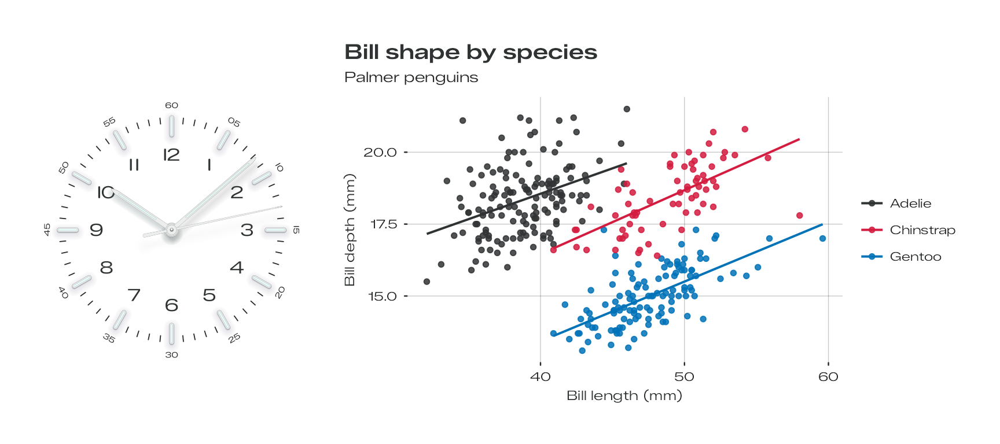
Turquoise
theme_bauhaus(“turquoise”) · paper #AFF2F1 ·
numerals #004F5D · track #007C84 · grain σ 3.8
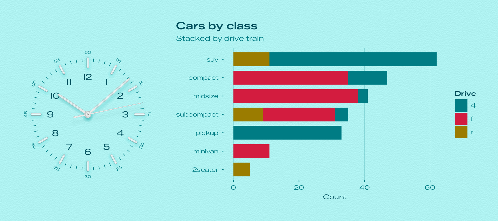
Glacier
theme_bauhaus(“glacier”) · paper #B1C5CD ·
numerals #1B3A49 · track #2E5B73 · grain σ 4.8
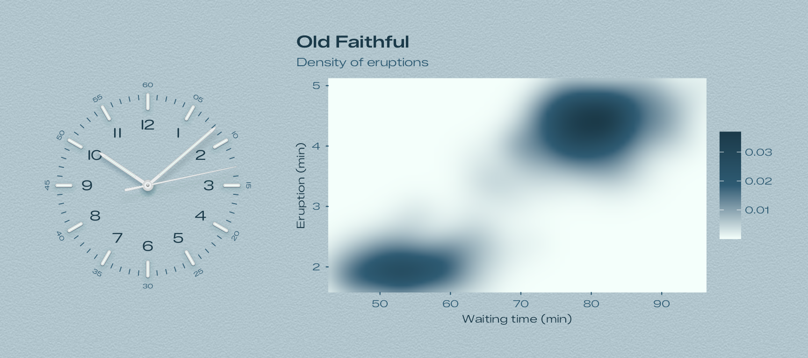
Ocean
theme_bauhaus(“ocean”) · paper #152D55 ·
numerals #D4FFF0 · track #6AF4D9 · grain σ 5.3
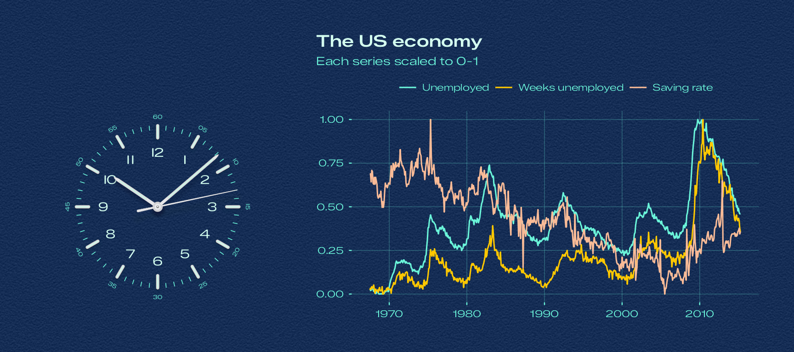
Tennis
theme_bauhaus(“tennis”) · paper #00824B ·
numerals #A7FF01 · track #45FFBB · grain σ 7.8
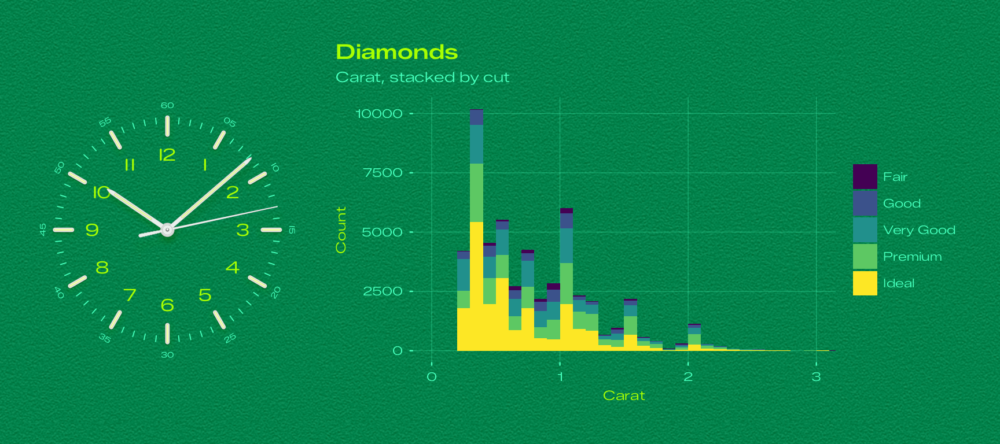
Signal Blue
theme_bauhaus(“signal_blue”) · paper #00AFEC ·
numerals #FFFFFF · track #9FFFFF · grain σ 4
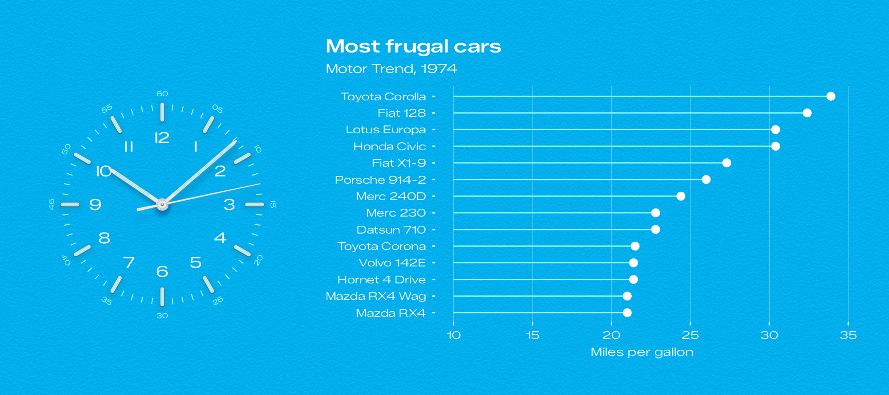
Salmon
theme_bauhaus(“salmon”) · paper #F9BB97 ·
numerals #531A03 · track #4C1200 · grain σ 5.3
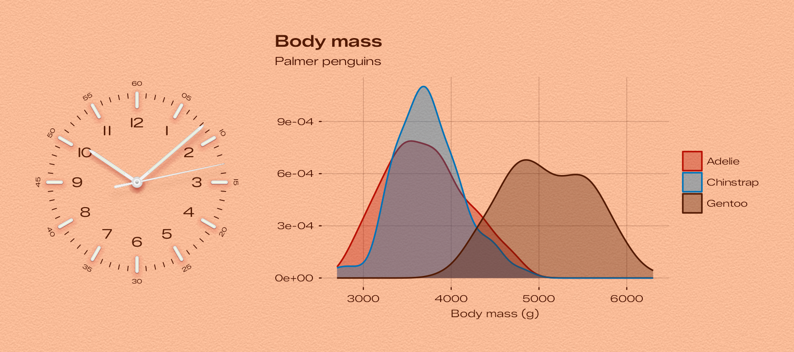
Yellow
theme_bauhaus(“yellow”) · paper #FFC800 ·
numerals #4A0305 · track #6E2C00 · grain σ 4.5
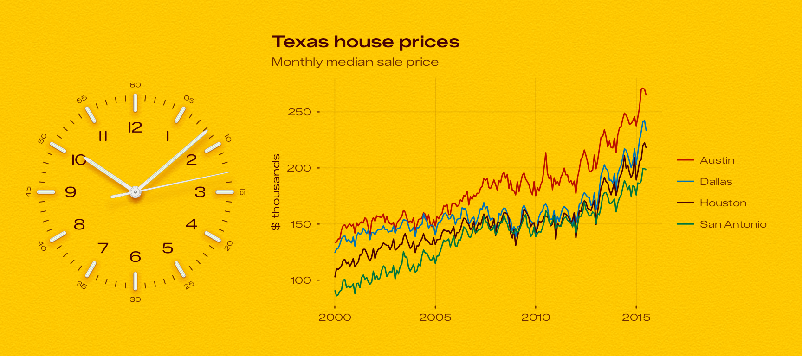
Beige
theme_bauhaus(“beige”) · paper #F1DAA6 ·
numerals #4F3513 · track #856641 · grain σ 5.3
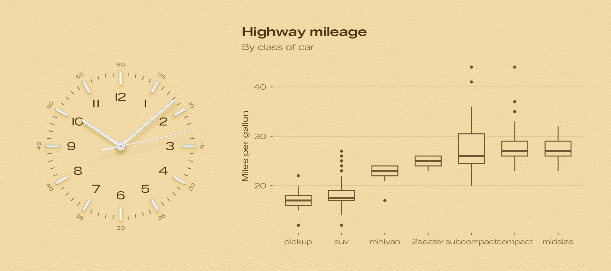
Pistachio
theme_bauhaus(“pistachio”) · paper #C0D2AD ·
numerals #233B13 · track #364F2F · grain σ 4.4
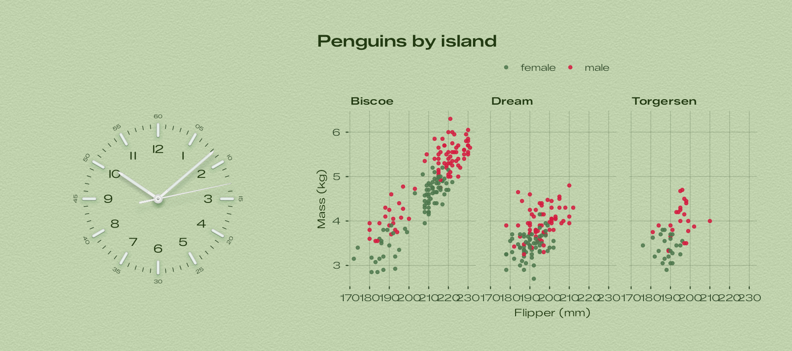
Lavender
theme_bauhaus(“lavender”) · paper #CFD6F5 ·
numerals #364379 · track #6570A6 · grain σ 4.7
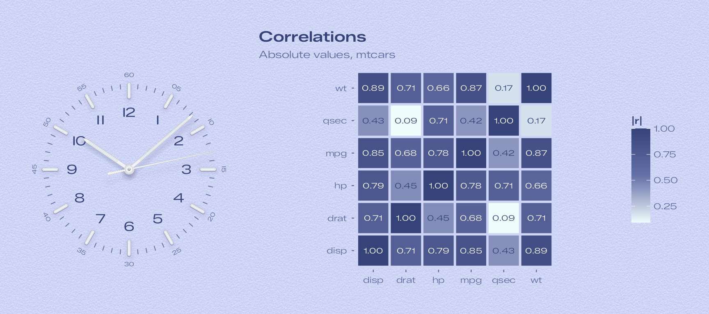
Rose
theme_bauhaus(“rose”) · paper #F9CCD8 ·
numerals #68353C · track #AF566C · grain σ 4.4
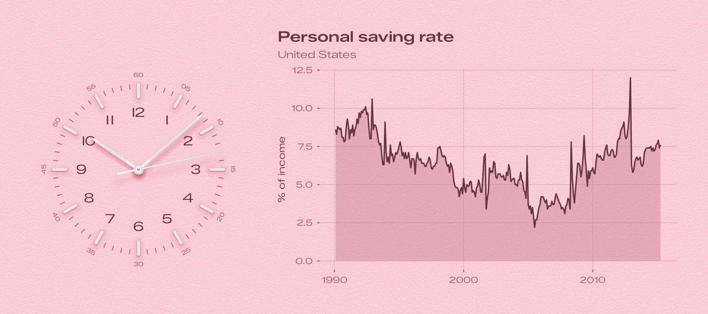
Sky Blue
theme_bauhaus(“sky_blue”) · paper #C0E7FF ·
numerals #194770 · track #4D7EAE · grain σ 4.3
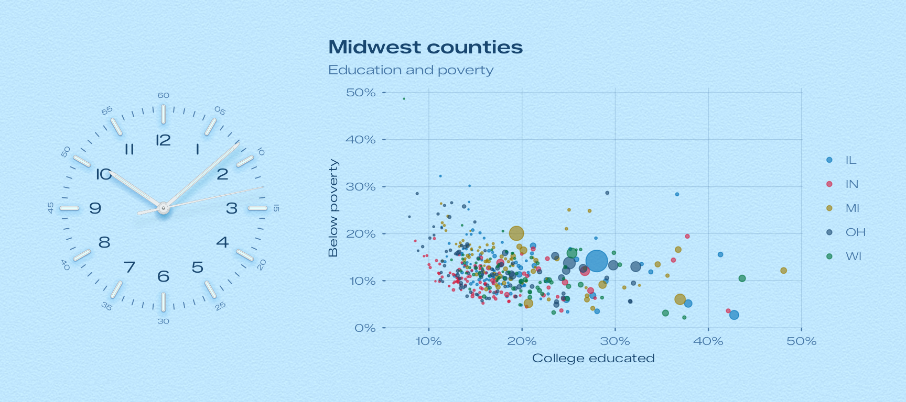
Cream
theme_bauhaus(“cream”) · paper #E8E6DF ·
numerals #545351 · track #B8B8B5 · grain σ 2.6
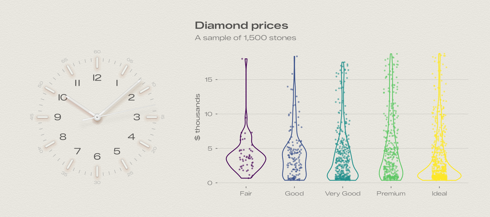
Slate
theme_bauhaus(“slate”) · paper #535457 ·
numerals #F4FBFF · track #7E8186 · grain σ 3.9
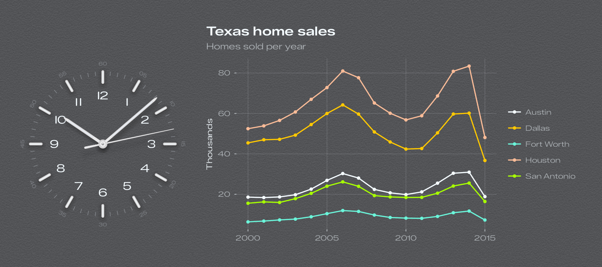
Noir
theme_bauhaus(“noir”) · paper #1B1B1C ·
numerals #E0E0DC · track #9A9DA1 · grain σ 3.9
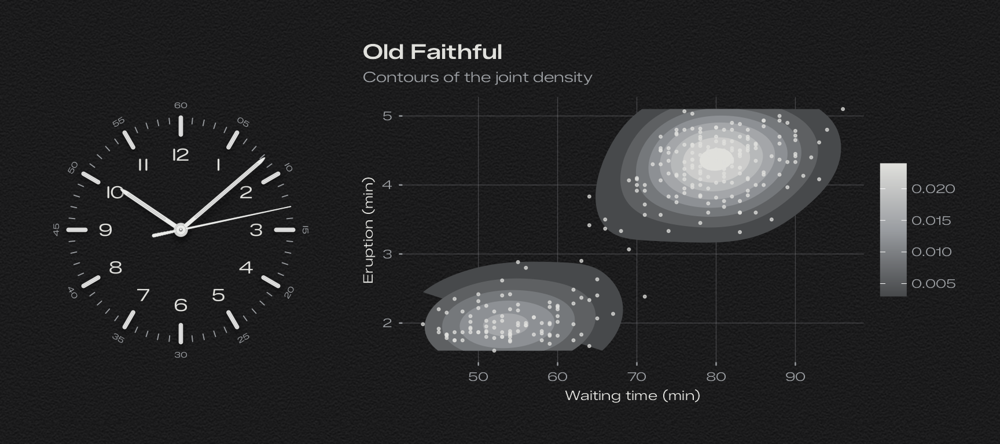
The code
Each figure is the dial drawn by bauhaus_clock() next to
a chart with the same theme, combined with patchwork:
knitr::opts_chunk$set(
echo = FALSE,
message = FALSE,
warning = FALSE,
dev = "ragg_png",
fig.width = 9,
fig.height = 4,
out.width = "100%"
)
library(ggplot2)
library(bauhaus)
library(patchwork)
penguins <- na.omit(palmerpenguins::penguins)
# The dial on the left, a chart on the right, on one sheet of the dial's paper. Extra theme
# settings for the chart go in `...`.
showcase <- function(dial, chart, grid = "xy", ...) {
clock <- bauhaus_clock(dial)
chart <- chart + theme_bauhaus(dial, base_size = 10.5, grid = grid) + theme(...)
(clock | chart) +
plot_layout(widths = c(1, 1.45)) +
plot_annotation(theme = theme_bauhaus(dial) + theme(plot.margin = margin(14, 14, 14, 14)))
}
dial_note <- function(dial) {
d <- bauhaus_dials[bauhaus_dials$dial == dial, ]
grain <- if (d$grain == 0) "no grain" else sprintf("grain σ %.2g", d$grain)
cat(sprintf(
"<p><code>theme_bauhaus(\"%s\")</code> · paper <code>%s</code> · numerals <code>%s</code> · track <code>%s</code> · %s</p>\n",
dial, d$paper, d$numeral, d$track, grain
))
}The charts:
white <- ggplot(penguins, aes(bill_length_mm, bill_depth_mm, colour = species)) +
geom_point(size = 1.4, alpha = 0.85) +
geom_smooth(method = "lm", formula = y ~ x, se = FALSE, linewidth = 0.7) +
labs(
title = "Bill shape by species", subtitle = "Palmer penguins",
x = "Bill length (mm)", y = "Bill depth (mm)", colour = NULL
)
showcase("white", white)
by_count <- function(x) factor(x, levels = names(sort(table(x))))
turquoise <- ggplot(mpg, aes(y = by_count(class), fill = drv)) +
geom_bar(width = 0.75) +
labs(title = "Cars by class", subtitle = "Stacked by drive train", x = "Count", y = NULL, fill = "Drive")
showcase("turquoise", turquoise, grid = "x")
glacier <- ggplot(faithfuld, aes(waiting, eruptions, fill = density)) +
geom_raster(interpolate = TRUE) +
coord_cartesian(expand = FALSE) +
labs(
title = "Old Faithful", subtitle = "Density of eruptions",
x = "Waiting time (min)", y = "Eruption (min)", fill = NULL
)
showcase("glacier", glacier)
econ <- subset(economics_long, variable %in% c("psavert", "uempmed", "unemploy"))
econ$variable <- factor(econ$variable,
levels = c("unemploy", "uempmed", "psavert"),
labels = c("Unemployed", "Weeks unemployed", "Saving rate")
)
ocean <- ggplot(econ, aes(date, value01, colour = variable)) +
geom_line(linewidth = 0.55) +
labs(
title = "The US economy", subtitle = "Each series scaled to 0-1",
x = NULL, y = NULL, colour = NULL
)
showcase("ocean", ocean, legend.position = "top")
tennis <- ggplot(diamonds, aes(carat, fill = cut)) +
geom_histogram(binwidth = 0.1, boundary = 0) +
coord_cartesian(xlim = c(0, 3)) +
labs(title = "Diamonds", subtitle = "Carat, stacked by cut", x = "Carat", y = "Count", fill = NULL)
showcase("tennis", tennis)
cars <- mtcars[order(mtcars$mpg), ]
cars$model <- factor(rownames(cars), levels = rownames(cars))
cars <- tail(cars, 14)
signal_blue <- ggplot(cars, aes(mpg, model)) +
geom_segment(aes(x = 10, xend = mpg, yend = model), linewidth = 0.4, colour = "#9FFFFF") +
geom_point(size = 2.4) +
labs(title = "Most frugal cars", subtitle = "Motor Trend, 1974", x = "Miles per gallon", y = NULL)
showcase("signal_blue", signal_blue, grid = "x")
salmon <- ggplot(penguins, aes(body_mass_g, fill = species, colour = species)) +
geom_density(alpha = 0.35, linewidth = 0.6) +
labs(title = "Body mass", subtitle = "Palmer penguins", x = "Body mass (g)", y = NULL, fill = NULL, colour = NULL)
showcase("salmon", salmon)
cities <- subset(txhousing, city %in% c("Austin", "Dallas", "Houston", "San Antonio"))
yellow <- ggplot(cities, aes(date, median / 1000, colour = city)) +
geom_line(linewidth = 0.5) +
labs(title = "Texas house prices", subtitle = "Monthly median sale price", x = NULL, y = "$ thousands", colour = NULL)
showcase("yellow", yellow)
beige <- ggplot(mpg, aes(reorder(class, hwy, median), hwy)) +
geom_boxplot(width = 0.6, outlier.size = 0.9) +
labs(title = "Highway mileage", subtitle = "By class of car", x = NULL, y = "Miles per gallon")
showcase("beige", beige, grid = "y")
pistachio <- ggplot(penguins, aes(flipper_length_mm, body_mass_g / 1000, colour = sex)) +
geom_point(size = 1, alpha = 0.85) +
facet_wrap(~island) +
labs(title = "Penguins by island", x = "Flipper (mm)", y = "Mass (kg)", colour = NULL)
showcase("pistachio", pistachio, legend.position = "top")
r <- abs(cor(mtcars[, c("mpg", "disp", "hp", "drat", "wt", "qsec")]))
cors <- data.frame(x = rep(colnames(r), each = nrow(r)), y = rep(rownames(r), ncol(r)), r = as.vector(r))
lavender <- ggplot(cors, aes(x, y, fill = r)) +
geom_tile(colour = bauhaus_colours("lavender")[["paper"]], linewidth = 1) +
geom_text(
aes(label = sprintf("%.2f", r), colour = I(ifelse(r > 0.55, "white", bauhaus_colours("lavender")[["numeral"]]))),
size = 2.6, family = bauhaus_font_family()
) +
coord_fixed() +
labs(title = "Correlations", subtitle = "Absolute values, mtcars", x = NULL, y = NULL, fill = "|r|")
showcase("lavender", lavender, grid = "none")
rose <- ggplot(subset(economics, date > as.Date("1990-01-01")), aes(date, psavert)) +
geom_area(alpha = 0.3, fill = bauhaus_colours("rose")[["track"]]) +
geom_line(linewidth = 0.6) +
labs(title = "Personal saving rate", subtitle = "United States", x = NULL, y = "% of income")
showcase("rose", rose)
sky_blue <- ggplot(midwest, aes(percollege, percbelowpoverty, size = poptotal, colour = state)) +
geom_point(alpha = 0.6) +
scale_size_area(max_size = 7, guide = "none") +
scale_x_continuous(labels = function(x) paste0(x, "%")) +
scale_y_continuous(labels = function(x) paste0(x, "%")) +
labs(title = "Midwest counties", subtitle = "Education and poverty", x = "College educated", y = "Below poverty", colour = NULL)
showcase("sky_blue", sky_blue)
set.seed(1)
dsample <- diamonds[sample(nrow(diamonds), 1500), ]
cream <- ggplot(dsample, aes(cut, price / 1000, colour = cut)) +
geom_violin(fill = NA, linewidth = 0.5, show.legend = FALSE) +
geom_jitter(width = 0.15, size = 0.5, alpha = 0.5, show.legend = FALSE) +
labs(title = "Diamond prices", subtitle = "A sample of 1,500 stones", x = NULL, y = "$ thousands")
showcase("cream", cream, grid = "y")
yearly <- aggregate(sales ~ year + city, data = subset(txhousing, city %in% c("Austin", "Dallas", "Houston", "Fort Worth", "San Antonio")), FUN = sum)
slate <- ggplot(yearly, aes(year, sales / 1000, colour = city)) +
geom_line(linewidth = 0.6) +
geom_point(size = 1.1) +
labs(title = "Texas home sales", subtitle = "Homes sold per year", x = NULL, y = "Thousands", colour = NULL)
showcase("slate", slate)
noir <- ggplot(faithful, aes(waiting, eruptions)) +
stat_density_2d(geom = "polygon", aes(fill = after_stat(level)), bins = 9) +
geom_point(size = 0.6, alpha = 0.7) +
labs(title = "Old Faithful", subtitle = "Contours of the joint density", x = "Waiting time (min)", y = "Eruption (min)", fill = NULL)
showcase("noir", noir)